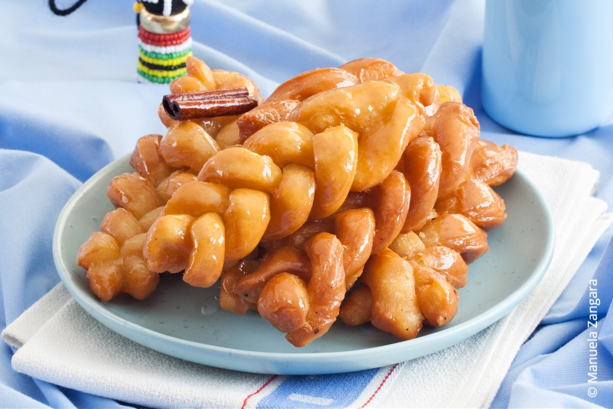

Koeksisters

Description
These sweet, crunchy and surypy Afrikaner confectionaries are enjoyed in households throughout South Africa as a dessert or accompaniment to tea and coffee.
Ingredients
The following ingredients are necessary:
For the Dough:
- 4 cups cake flour
- 0.5 tsp salt
- 4 tsp baking powder
- 1 tbsp sugar
- 0.25 cup butter
- 2 eggs
- 0.5 cup milk
- 0.5 cup milk
- 3 cups canola oil
For the syrup:
- 4 cups white sugar
- 2.5 cups water
- 1 cinnamon stick
- 2.5 cm piece fresh root ginger
- 1 tbsp lemon juice
- 0.5 tsp cream of tartar
- 0.5 tsp glycerine
Steps
Steps to create recipe
- Place the ingredients for the syrup into a saucepan and stir over moderate heat until the sugar has melted. Bring to boil and boil 1 minute. Reduce heat and simmer 10 minutes. Allow to cool and chill overnight to make the syrup ice cold.
- Combine the dry ingredients for the dough and rub in the butter until the mixture resembles coarse crumbs. Beat together the eggs and milk, add to the dry ingredients and mix with a fork, adding as much of the water as necessary to make a soft dough (similar to scone dough).
- Turn out the dough on a floured surface and knead very gently for 2 to 3 minutes until smooth. Return to the bowl, cover and chill for at least 30 minutes or several hours.
- Roll out the dough on a lightly floured surface to a rectangular shape and about 0.5 cm thick. Cut lengthwise into strips about 4 cm wide and then crosswise into rectangles about 8 cm long. Keeping about 1 cm at the top end of each rectangle intact, cut it into three strips. Plait the strips very loosely to allow for rising while frying and press the ends together well to seal neatly. Set aside on a tray until all the plaits are made and cover with a damp cloth.
- Divide the syrup into two bowls; use the first bowl until the syrup starts to warm up and then use the second bowl. Return the first bowl with syrup to the freezer to chill again.
- Pour enough oil into a medium sized saucepan to come 5 cm up the sides of the pan and heat the oil to moderately hot (170 º C). Fry the koeksisters a few at a time until golden on both sides. Lift out with a perforated spoon and place into the ice-cold syrup. Press down lightly for about 30 seconds and lift out with a fork or tongs. Take care not to use the same implements in the oil and syrup. Place onto a cooling rack set over a plate or tray to catch up the syrup that will drain off for it may be necessary to re-use it at the end. Repeat until all the koeksisters are fried and dipped.
- Serve as a special treat for dessert or with Rooibos tea or coffee.
Nice, now it's time to dig in.

Enjoy!
To see our other delicious recipes click here.
Note: This recipe was sourced from the following website.